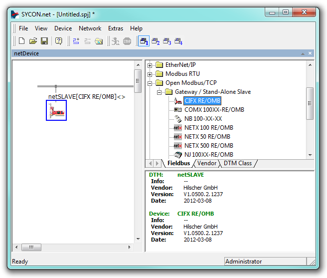
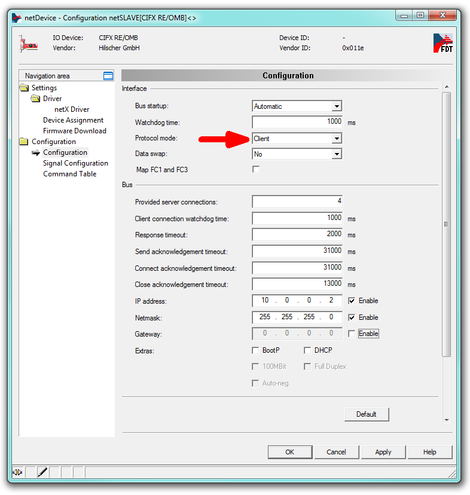
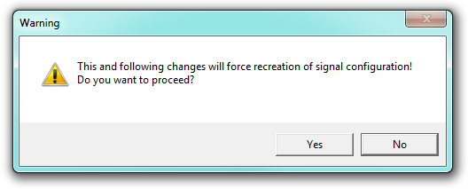
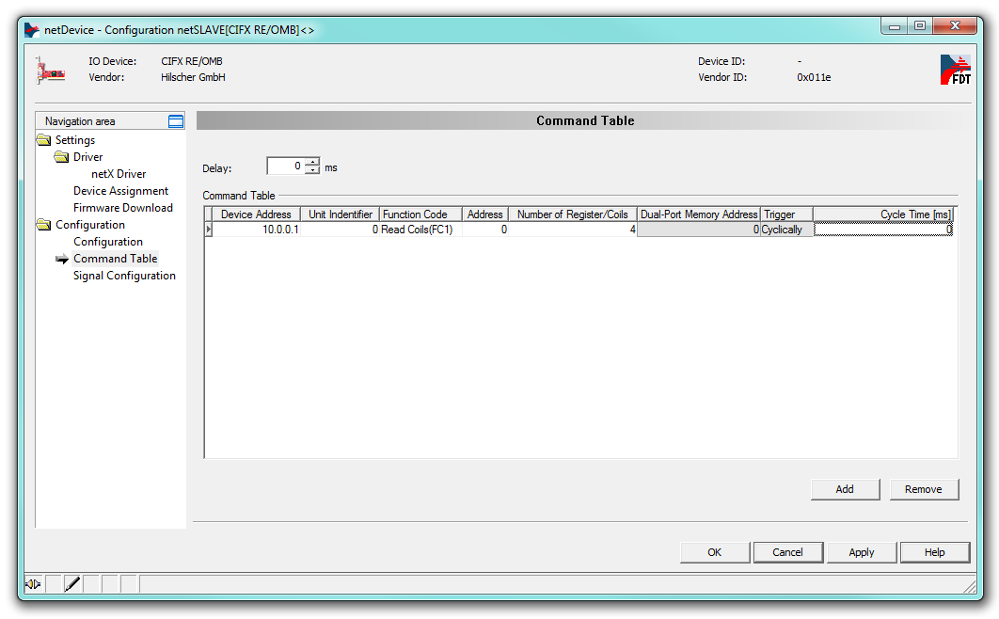
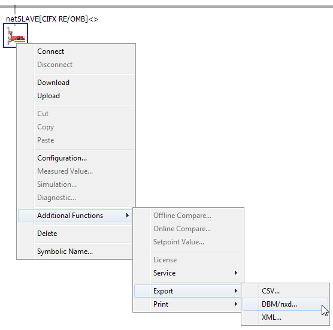

IO753 Usage Notes
IO753 Usage Notes — Usage information about the I/O module
SYCON.net Configuration Tool
![[Tip]](images/tip.png) | Tip |
|---|---|
You can download the SYCON.net Configuration Tool here: V1.400 Build 170125. |
![[Note]](images/note.png) | Note |
|---|---|
Only SYCON.net V1.400 Build 170125 has been tested. There is no guarantee therefore that other versions will work with the Speedgoat I/O Blockset. |
For some advanced scenarios the Modbus TCP Client may need to be configured with the SYCON.net configuration tool.
Open SYCON.net and locate the "CIFX RE/OMB" device. Drag and drop the device to the main panel.

Double-click on the icon to open the Configuration window of the controller.
Navigate to Configuration, Configuration. These are the parameters that you can use to setup the network settings of the Modbus TCP Client.

For the Modbus TCP Client it is important to change the parameter "Protocol mode" from "I/O Server" to "Client" and confirm the popup window with yes.

Navigate to Configuration, Command Table. Here you can setup the Modbus TCP command table.

Note The maximum number of configurable Modbus TCP servers is 16.
Apply the configuration and close the windows. Right click on the controller icon and select Additional Functions, Export, DBM/nxd.

Select a name for the file, e.g.: my_client.nxd and save the file.
In MATLAB, locate the file and use the following script to load the configuration to the target machine.
IO753 = sg_IO75X_struct(); % Define default structure IO753.protocol = 'IO753'; % Protocol Speedgoat ID IO753.cardid = '1'; % Card ID as defined in the model IO753.configfiles = '2'; % Number of configuration files IO753.configPath = 'C:\Tests\ModbusTCP'; % Absolute file path or '' for current directory IO753.configfile1 = 'my_client.nxd'; % Name of first configuration file IO753.configfile2 = 'my_client_CmdTbl.nxd'; % Name of second configuration file sg_IO75X_loadconfig(IO753);
Configure the driver blocks according to the configuration defined in SYCON.net. In the Setup driver block select "Configuration mode: Configuration file".
When you build the model, the firmware and configuration are loaded to the IO753 Modbus TCP Client I/O module.
Front Plate Description
The IO753 acts as one Modbus TCP Client exclusively. The two RJ45 connectors simply serve to build up a line-based network structure. Plug the cable from the previous Modbus TCP Server into the first socket. Connect the second socket with the next Modbus TCP Server. The LEDs described below indicate the communication status of the single Modbus TCP Client.


LED Status Description
| LED | Color | State | Meaning |
| SYS | Green | On | Operating system running |
| Green/Yellow | Blinking | Second stage bootloader is waiting for firmware | |
| Yellow | On | Bootloader netX (= romloader) is waiting for second stage bootloader | |
| Off | Off | Power supply for the device is missing or hardware defect | |
| RUN/COM1 | Green | On | Connected: OMB task has communication. At least one TCP connection is established |
| Green | Flashing (1 Hz) | Ready, not yet configured: OMB task is ready and not yet configured | |
| Green | Flashing (5 Hz) | Waiting for Communication: OMB task is configured | |
| Off | Off | Not Ready: OMB task is not ready | |
| ERR/COM2 | Off | Off | No communication error |
| Red | Flashing (2 Hz, 25% on) | System error | |
| Red | Red | Communication error active |
Note that only the IO753 PCI and PCIe modules have the SYS LED. This LED does not feature on the IO753 mPCIe module.
Status Codes
For the list of status codes, please refer to Status Codes for Protocols Supported with the IO64x/IO75x Modules.